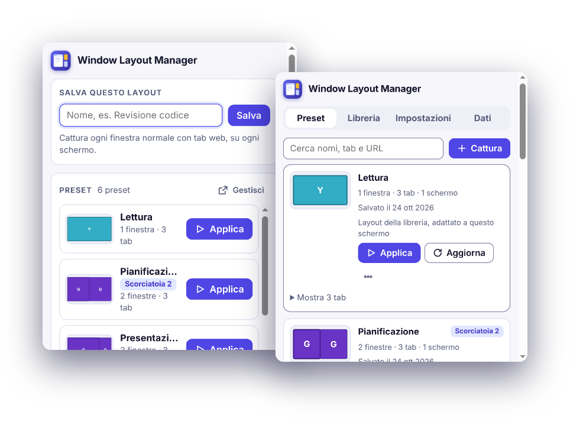
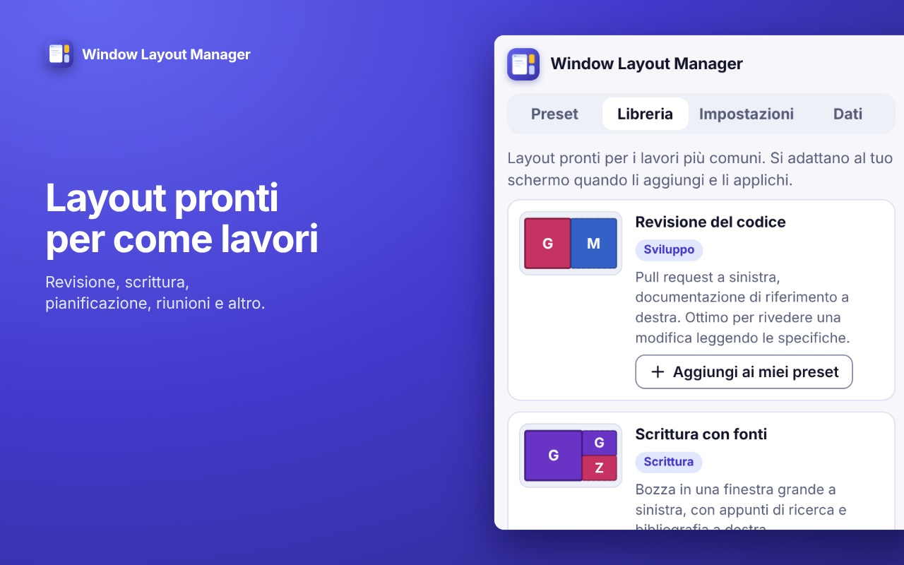
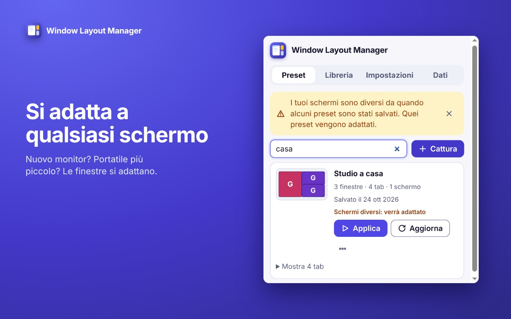
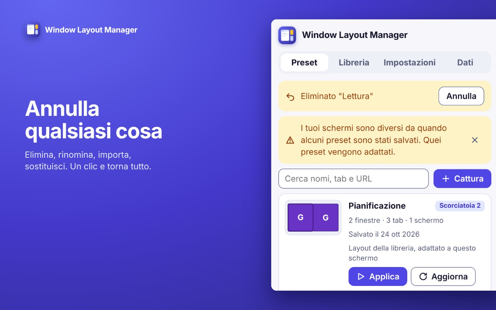
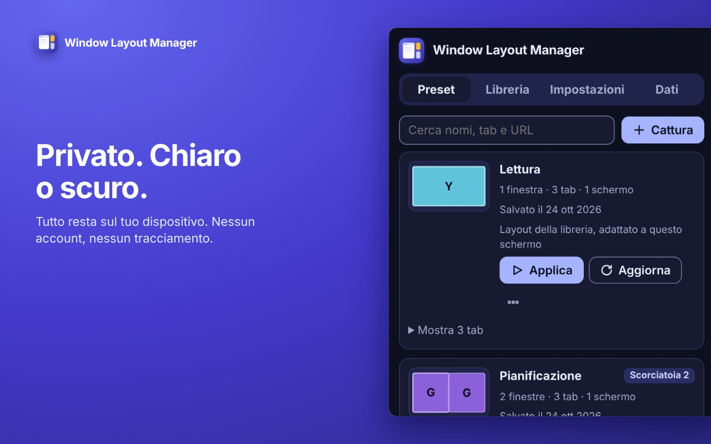

Le tue finestre, esattamente come le avevi lasciate.
Salva come è disposto il tuo browser e ripristinalo con un clic. Ovunque siano i tuoi schermi.
Gratuito. Nessun account. Funziona con Chrome 123 e successivi.

Pensata per come lavori davvero
Salva un layout, ripristinalo con un clic
Finestre, tab, tab fissati, posizioni e lo schermo su cui era ogni finestra. Applica dalla barra, dal pannello laterale o con Ctrl+Maiusc+1, 2, 3.
Si adatta ai tuoi schermi
Schermo di dimensioni diverse o monitor scollegato? Le finestre mantengono la posizione in proporzione e restano sempre visibili.
Annulla qualsiasi cosa
Elimina, rinomina, aggiorna, importa, perfino un layout che ha chiuso le tue finestre. Un clic e torna tutto.
Layout pronti
Parti da revisione del codice, scrittura con fonti, pianificazione, presentazioni, lettura o riunioni, poi rendili tuoi.
Sa cosa hai aperto
Si accorge quando le tue finestre corrispondono a un layout salvato, propone di aggiornarlo e suggerisce un nome dai siti aperti.
Privata per progetto
Tutto resta sul tuo dispositivo. Nessun account, nessuna analisi, nessun tracciamento, nessun codice remoto.
Tre passi
Disponi
Apri finestre e tab come lavori di solito.
Salva
Clicca l'icona nella barra, dai un nome al layout, premi Salva.
Applica
Un clic, o una scorciatoia. Puoi sempre annullare.
Uno sguardo dentro




Domande
Invia i miei dati da qualche parte?
No. I layout sono salvati nel browser, sul tuo dispositivo. L'estensione non ha account né analisi e non fa richieste di rete per conto suo. I dettagli sono nell'informativa sulla privacy.
Perché chiede il permesso «tabs»?
Per leggere indirizzo e titolo di ogni tab e salvarli, e per aprire i tab quando ripristina un layout. Senza, l'estensione non può sapere quali pagine sono aperte. Non legge mai il contenuto di una pagina.
A cosa servono gli altri permessi?
«windows» legge e imposta posizione, dimensione e stato delle finestre. «system.display» legge la disposizione degli schermi per mettere le finestre sullo schermo giusto. «storage» conserva preset e impostazioni. «sidePanel» mostra il gestore nel pannello laterale di Chrome.
Cosa succede alle finestre già aperte quando applico un layout?
Scegli una volta: sostituirle, sostituirle mantenendo le finestre con tab fissati, oppure aggiungere il layout accanto. Finché non scegli, non viene chiuso nulla, e Annulla riporta indietro ciò che fosse stato chiuso.
Quali tab vengono salvati?
Le pagine web (http e https). Pagine del browser, file locali e pagine di estensioni vengono saltati, e un layout importato da file viene filtrato allo stesso modo.
È gratuita?
Sì.